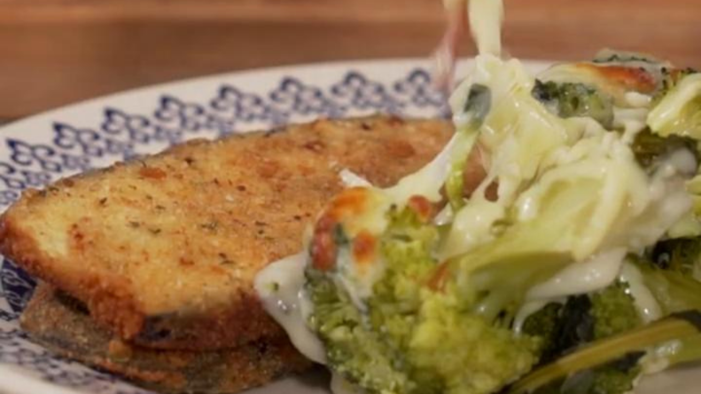

Milanesa de berenjena con brócoli gratinado

Ingredientes
- Una berenjena.
- Sal, a gusto.
- Un brócoli.
- Queso parmesano en hebras.
- Pan rallado, c/n.
- Orégano.
- Ají molido.
- 3 huevos.
- 250 g de harina.
Para la salsa bechamel
- 50 g de manteca.
- 50 g de harina.
- 600 cc de leche.
- Sal, a gusto.
- Nuez moscada.
Procedimiento
- Cortar la berenjena en láminas de aproximadamente poco menos de un cm.
- Salar.
- Cortar el brócoli y cocinar en agua hirviendo, tapado, durante unos 10 minutos. Reservar en una fuente.
- Para la bechamel, mezclar la harina con la manteca en una ollita o sartén y agregarle la leche.
- Añadir la nuez moscada, terminar de unificar para que no haya grumos y esparcir sobre el brócoli.
- Espolvorear que parmesano en hebras y llevar esa fuente a horno fuerte a gratinar.
- Para las milanesas, preparar el rebozado mezclando el pan rallado, la sal, el orégano y el ají molido.
- Batir los huevos en un bowl.
- Secar la berenjena con un paño de papel, pasarlas por harina, luego por el huevo y finalmente por la
mezcla de pan rallado.
- Freír en aceite bien caliente.
- Servir las milanesas junto con el brócoli gratinado.